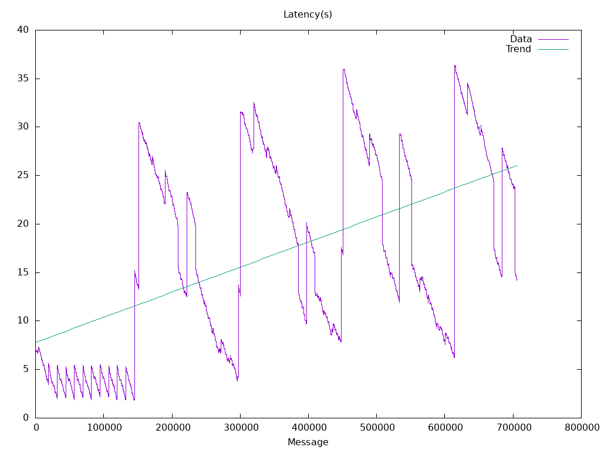

Options
Image: quay.io/openshift-logging/fluentd:1.14.6
Total Log Stressors: 1
Lines Per Second: 2500
Run Duration: 5m
Payload Source: synthetic
Latency of logs collected based on the time the log was generated and ingested
| Total |
Size |
Elapsed |
Mean |
Min |
Max |
Median |
| Msg |
|
(s) |
(s) |
(s) |
(s) |
(s) |
| 705733 |
256 |
5m0s |
16.929 |
1.826 |
36.399 |
14.956 |

| Stream |
Min Seq |
Max Seq |
Purged |
Collected |
Percent Collected |
| functional.0.0000000000000000DBCED7977B8F643F | 0 | 716850 | 0 | 705733 | 98.4% |
<system>
log_level debug
</system>
<source>
@type tail
@id container-input
path /var/log/pods/testhack-clwn63sc_*/loader-*/*
exclude_path ["/var/log/pods/**/*/*.gz","/var/log/pods/**/*/*.tmp"]
pos_file "/var/lib/fluentd/pos/containers-app"
refresh_interval 5
rotate_wait 5
tag kubernetes.*
read_from_head "true"
<parse>
@type regexp
expression /^(?<@timestamp>[^\s]+) (?<stream>stdout|stderr) (?<logtag>[F|P]) (?<message>.*)$/
time_format '%Y-%m-%dT%H:%M:%S.%N%:z'
keep_time_key true
</parse>
</source>
<filter kubernetes.**>
@type concat
key message
partial_key logtag
partial_value P
separator ''
</filter>
<match **>
@type forward
heartbeat_type none
keepalive true
<buffer>
flush_mode interval
flush_interval 5s
flush_at_shutdown true
flush_thread_count 2
retry_type exponential_backoff
retry_wait 1s
retry_max_interval 60s
retry_forever true
overflow_action block
</buffer>
<server>
host 0.0.0.0
port 24224
</server>
</match>